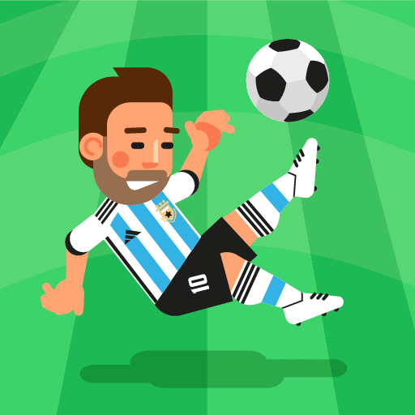

Osnovni podaci
World Soccer Champs - vodi svoj tim do pobjede.
World Soccer Champs je popularna mobilna igrica iz oblasti fudbala. Ovu igru je napravila kompanija Monkey I-Brow Studios, a glavni kreator je programer Pedro Soares. Igra je prvi put objavljena 18. juna 2020. godine i dostupna je za Android i iOS uređaje. U ovoj igrici igrač ima ulogu trenera i menadžera fudbalskog tima. Može da vodi klub ili reprezentaciju, kupuje i prodaje igrače, pravi taktiku i učestvuje u raznim takmičenjima. U igri postoji više od 200 liga i turnira širom svijeta, što je čini veoma zanimljivom i raznovrsnom. Jedna od zanimljivih stvari kod ove igre je da ne zauzima previše memorije u odnosu na druge fudbalske igrice. Na primjer, na telefonu može zauzimati oko 300 MB prostora, što je relativno malo za igru sa toliko sadržaja. World Soccer Champs je postala veoma popularna i ima milione preuzimanja širom svijeta. Igrači je vole jer je jednostavna za igranje, ali opet pruža dosta mogućnosti i izazova. Takođe, često se ažurira, pa se dodaju nove sezone, timovi i poboljšanja. Zaključak je da je World Soccer Champs odlična igrica za sve ljubitelje fudbala jer kombinuje zabavu, strategiju i takmičenje u jednoj aplikaciji.
Ovde možete instalirati igricu za Android
Ovde možete instalirati igricu za iOS

Zašto igrati?
- Zabavna i jednostavna
- Offline igranje
- Veliki broj timova